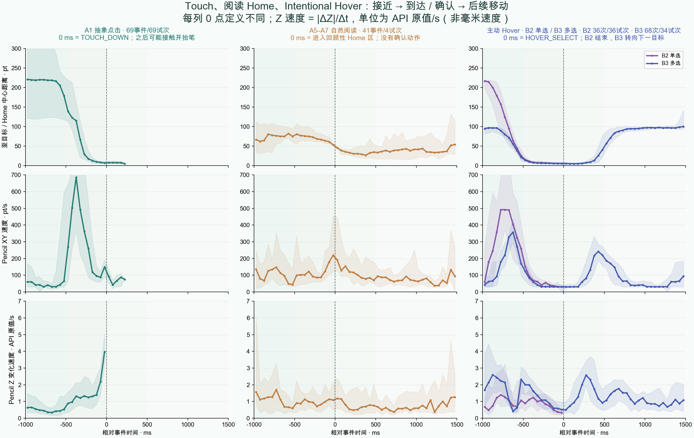
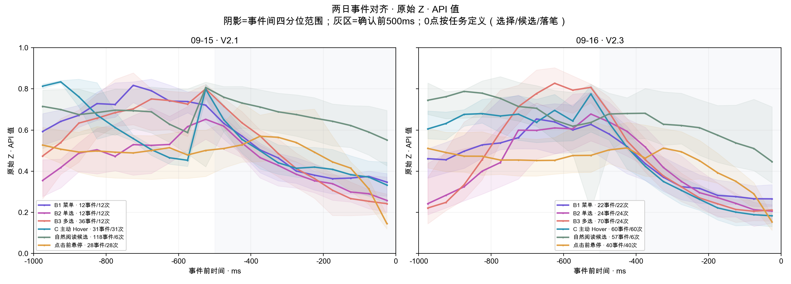
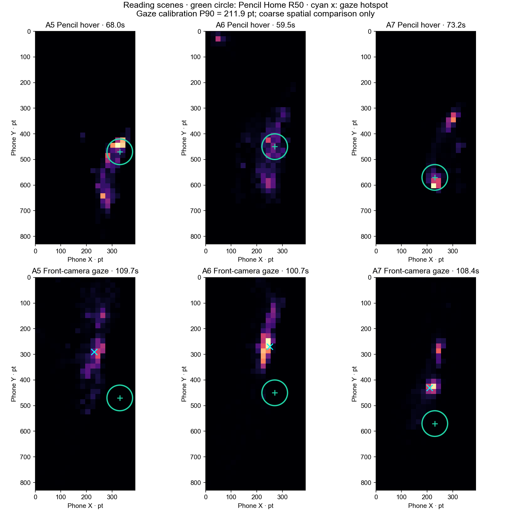
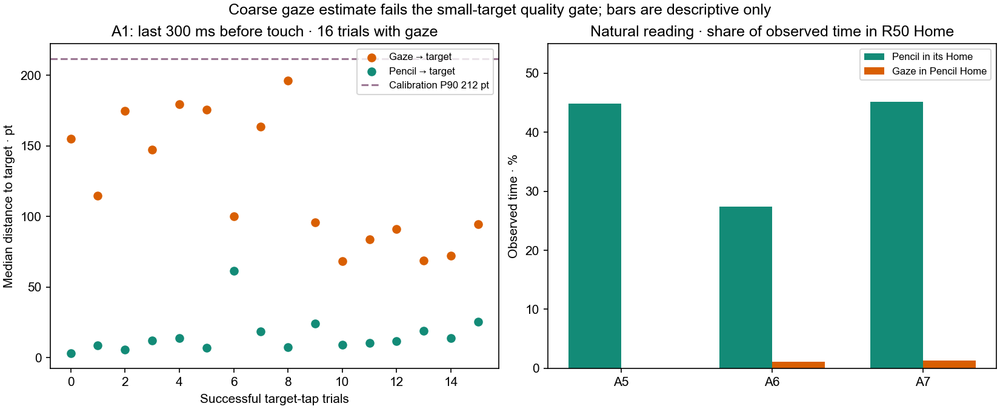

动作轨迹、阅读 Home 与视线
按实验版本综合运动证据与最新前摄探索。先看完整动作，再用有目标的点击检查视线是否足够准确；每组数据保留自己的分母。
结论先行
同一参与者的不同会话：9/15 V2.1 两种右手姿势；9/16 V2.3 两种姿势的历史快照；9/16 后续 V2.4 只有右手拇指 A1–A7。版本、任务和顺序不同，不能合并计算识别准确率。
01 · 有目标动作：移向目标 → 确认 → 转移
旧两日运动汇总的 B2 悬停单选中，可配对的接近与确认阶段分别有 8、19 个事件，后段速度较低的数量也分别为 8、19。B3 多选的连续目标迁移可配对试次为 7/12 与 19/24；速度下降与 Z 原值下降在这些可配对试次均有出现。驻留是协议要求，不能把这些比例当成未受任务约束的意图识别率。

查看 Z 原值变化速度

02 · 无指定指向目标的阅读：Pencil Home 与视线
V2.4 新会话的新闻、图文、视频各记录约 120 秒。三段手机内连续有效视线共 318.8/360.0 秒，Pencil 悬停共 200.8/360.0 秒。Home 是每段 Pencil 悬停的时间加权 R50 密集区，不依赖同一对象停留多久。
| 阅读场景 | Pencil Home (pt) | 视线热点 (pt) | 中心距 | Pencil 在 Home | 视线在 Home |
|---|---|---|---|---|---|
| 新闻长文 | 330, 470 | 230, 290 | 206 pt | 44.8% | 0.0% |
| 图文流 | 270, 450 | 250, 270 | 181 pt | 27.4% | 1.1% |
| 短视频流 | 230, 570 | 210, 430 | 141 pt | 45.1% | 1.3% |

记录坐标的视线热点都位于 Pencil Home 上方。三段只有各一例，Home 中心也随场景改变；不能将图中的距离视作真实眼手分离的精确估计。
03 · 已知目标点击，是眼动过滤的正对照
18 次成功 A1 点击里，16 次在触屏前 300 ms 有手机内有效视线；其中 14/16 次视线没有进入目标中心 R50。试次中位的 Pencil 到目标距离为 11.8 pt，视线为 107.4 pt。若用“眼与笔落在同一小目标”作硬条件，当前估计会拒掉大量已知目标操作。

目前不能报告 intentional hover 眼动准确率。一次校准虽记录 4 个独立验证点全覆盖，但 P90 为 211.9 pt，质量标签 COARSE_ONLY；新会话只做到 A1–A7，没有 B1–B4 主动悬停或 C1–C3 同场景条件。视线缺失或校准失败应拒判，不等于用户没看目标。
下一步的证据门槛
同一姿势先重复校准与阅读后复测；小对象试运行须达到协议的 P90 ≤24 pt、有效帧 ≥70%。若始终不达标，先分析较大内容区域或改用专用眼动仪。之后补 B2/B3、C3 的主动与自然对照，冻结时间窗，再评估 Pencil-only 与 Pencil+gaze 的召回、误触候选及拒判。